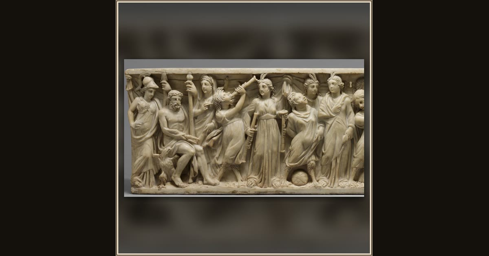

Marble sarcophagus with the contest between the Muses and the Sirens
Roman · 3rd quarter of 3rd century CE · met
The relief on a Roman sarcophagus sets a seated bearded figure among women identified as Muses; Hesiod opens with their songs for father Zeus (36–37) Explore its place in Hesiod's Poems, Theogony, line 36.